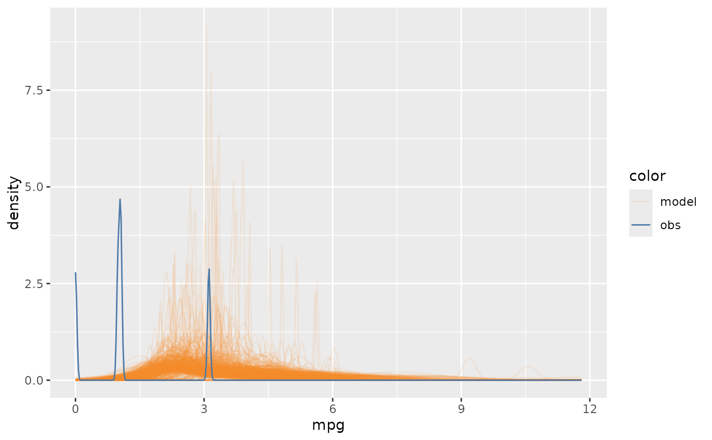

mc_observation_transformation.Rdmc_observation_transformation() defines the necessary transformation applied
to the observed data before passing it to generate model check.
mc_observation_transformation(transform = NULL, group = NULL)The transform function that is applied on the
response variable in observed data. Default to be NULL. If NULL,
vmc will use no transformation. The transform function takes an input
of a data frame, e.g., the data frame passed to observation, containing a
column named observation standing for observations of the response variable
and several columns standing for the predictors in model (if any). The output
of the transform function should be in the same form as the input, a data frame
containing a column named observation and several columns for the predictors.
This argument is useful when mc_distribution is set to a distribution
that is in a different unit from the raw observation, e.g., sigma in Gaussian
family models describes the variance of observation. See example for more details.
A set of variables quoted by ggplot2::vars() and represents
the group option used before applying the transform function.
The transformation is necessary when the distribution generated by the model
is not predictive distributions. For example, when the distribution generated
from phi parameter of beta distribution, the observed data can not be shown
in model check directly but need to be transformed into the same scale of
phi.
library(ggplot2)
mcplot(mpg_model) +
mc_distribution("sigma") +
mc_observation_transformation(sd, vars(disp)) +
mc_gglayer(coord_flip())
#> Warning: Removed 23 rows containing non-finite values (`stat_density()`).
